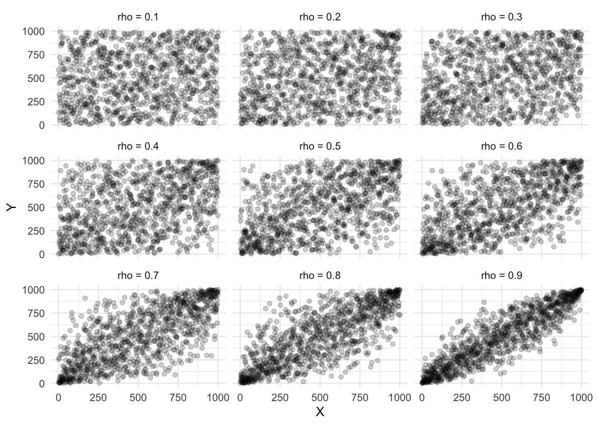
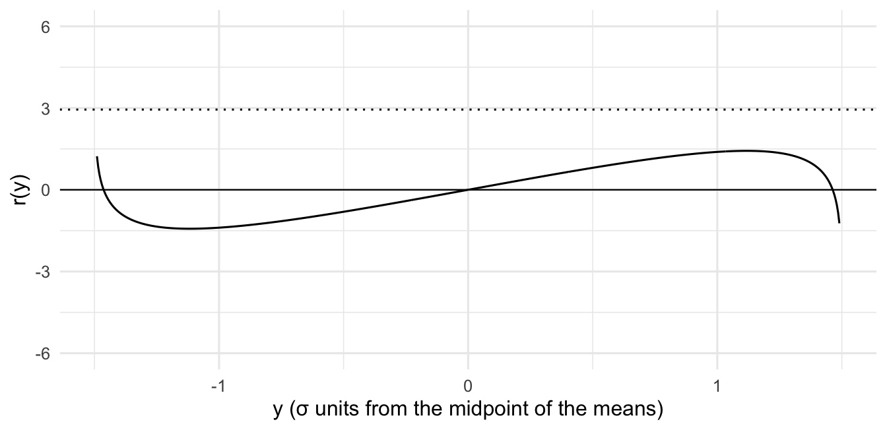
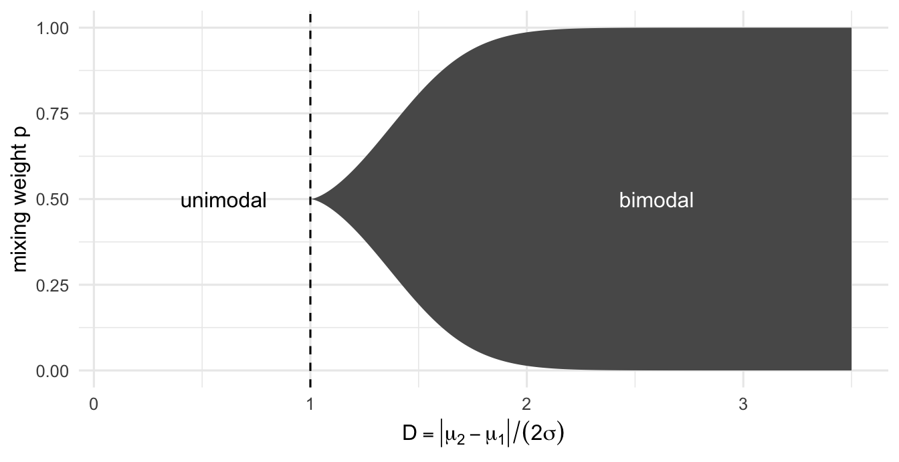
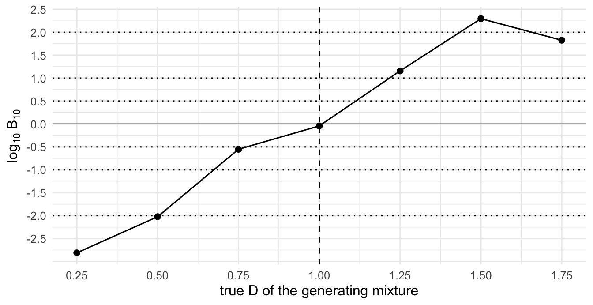

honorific marking and bimodality: a case of two grammars
tutorial
statistics
bayesian
linguistics
code
really tired of people telling me ‘you do not know turkish’ (i am a native turkish speaker). so i set out to check whether there are two grammars in plural marking in turkish. i built jammalamadaka & jin’s (2021) mode test from scratch in r, and tested bimodality in grammaticality judgments.
Author
Utku Türk
Published
August 9, 2026
Whenever I discuss some Turkish datum with my Turkish friends, I usually count to 20, and one of them says “haha, Utku should learn Turkish first”. They eventually come around and see my nuanced grammaticality judgments. The same thing happened with ellipsis, with as if, with focus marking, and with questions.1 The one I could never shake, though, is register marking with plural. Here is the pair:
Çocuk geldiler efendim.
* Çocuk geldiler.
For many speakers of Turkish, both of these are ungrammatical. The subject is singular and the verb is somehow plural. Not for me, and I figure not for many others either. The grammar I was ordained with by the higher powers (and Chomsky) is one where plural -lAr on the verb is available when there is an overt vocative addressed to someone formal. This is also why one of my early experiments got scrapped: the supposedly grammatical fillers came out around 50%.
Years later I went back to that experiment and ran another one with 170 participants. I had sentences like (1) and their counterparts with an informal addressee, lan. Everything at the end of this post is about those conditions.
When I plotted per-participant acceptance rates, the histogram did not look like one hump around the mean. It looked flat, with people sitting at every rate from 0 to 1 and no crowd anywhere in particular, which is what you get when a group down near 0 who reject the structure and a group up near 1 who take it are smeared together. If that is what is going on, then “mean acceptance was 0.45” describes nobody. Half the room is low, the other half is high, and 0.45 is the gap between them.
The trouble is that “I squinted at the histogram and saw two humps” is not a method. Bimodality is exactly the kind of thing eyes invent, especially when you want it. Remember that famous tweet? Famous among nerds like me, anyway. When can you actually see a correlation? Forget weak ones up to 0.3, even 0.5 or 0.6 are not visible to the naked eye.
library(MASS)library(tidyverse)set.seed(42)rhos <-c(0.1, 0.2, 0.3, 0.4, 0.5, 0.6, 0.7, 0.8, 0.9)n <-1000# Map through correlation values and generate ranked data framedf_ranked <-map_dfr(rhos, function(r) { Sigma <-matrix(c(1, r, r, 1), nrow =2) dat <-mvrnorm(n = n, mu =c(0, 0), Sigma = Sigma)tibble(rho =paste0("rho = ", r),X_rank =rank(dat[, 1]),Y_rank =rank(dat[, 2]) )})# Faceted scatter plotggplot(df_ranked, aes(x = X_rank, y = Y_rank)) +geom_point(alpha =0.2) +facet_wrap(~rho, nrow =3) +theme_minimal() +labs(x ="X",y ="Y" )

So I went looking for a principled test. There is plenty available online: k-means, the dip test, gaussian mixture comparisons, each with three or four implementations in R. I did not like any of them, for reasons that will become clear in a second. What I ended up implementing is Jammalamadaka & Jin (2021),2 whose classical ingredient is Behboodian (1970).3 They integrate the posterior directly over Behboodian’s exact conditions for where a mixture has its modes, which gets you posterior probabilities for the number of modes without asymptotic approximations and without picking a smoothing bandwidth.
We are going to build the whole thing from scratch, in the order I wish someone had shown it to me. Here is the task list.
Write down the model and notice that two components is not two modes
Derive the exact condition for two peaks
Turn that condition into one small R function, and check it against brute force
Turn the condition into a Bayesian test
Build the Gibbs sampler one full conditional at a time
Lie to the whole thing with fake data before trusting it
with \(\varphi\) the standard normal density, means \(\mu_1, \mu_2\), and mixing weight \(p \in (0,1)\).
One could fit this two-component model, fit a one-component model, compare them, and go home. But “the data want two components” is not the same claim as “the density has two peaks”. Below is a mixture that is honestly two-component, with the components right there as dashed lines, whose density has exactly one mode. Two components does not buy you two visible behaviors, and two visible behaviors is what I am after.
Figure 1: A two-component mixture (p = 0.4, means 0 and 1.6, σ = 1) whose density has a single peak. If you saw only the solid line you would call it a skewed unimodal distribution, and you would be right.
The two humps blur into one because the means are too close relative to \(\sigma\). The number of components is a fact about how you parameterised the curve. The number of modes is a fact about the shape of the curve. My linguistic question, one grammar or two, is about the shape. Jammalamadaka & Jin test the shape directly, and they can get away with it because for this particular model the shape question has an exact answer.
when exactly does the valley appear?
This is the only section with real math in it. If you want to skip it, here is the summary:
A mixture of two bell curves only forms two separate peaks if the underlying groups are far enough apart and reasonably balanced in size.
If their averages are within two standard deviations of each other, they collapse into a single hump no matter what proportions you use. Even with plenty of separation, a big imbalance ruins the effect: a 99/1 split turns the minority group into a subtle shoulder rather than a summit of its own.
Fix the parameters and ask how many local maxima the function has. Take \(\mu_1 < \mu_2\) and standardise. Let \(y\) be the distance from the midpoint of the means in standard deviation units, and let
\[
D \;=\; \frac{\mu_2 - \mu_1}{2\sigma}
\]
be the half-separation of the means, also in standard deviation units. Then \((x-\mu_1)/\sigma = y + D\) and \((x-\mu_2)/\sigma = y - D\), so up to a constant the density is
The two terms can only cancel if \((y+D)\) and \((y-D)\) have opposite signs, which means \(-D < y < D\). So every critical point sits between the two component means, which already matches intuition. On that interval we can divide through and take logs, and after simplifying the ratio of the two bell curves the condition becomes
The modes of the mixture are the crossings of a fixed curve \(r(y)\) with a horizontal line whose height is the log-odds of the mixing weight. Everything now depends on the shape of \(r\), so differentiate it:
If \(D \le 1\), then \(D^2 - y^2 \le 1\) everywhere on the interval, so \(r'(y) \le 0\). That makes \(r\) monotone decreasing, from \(+\infty\) at the left edge to \(-\infty\) at the right, and a monotone curve crosses any horizontal line exactly once. One critical point, one mode, whatever the weights are. If the means are within two standard deviations of each other, bimodality is impossible. That is what the trap figure above is exploiting, where \(D = 0.8\).
If \(D > 1\), then \(r'(y) > 0\) exactly when \(y^2 < D^2 - 1\), so the curve decreases, rises between \(y_\pm = \mp\sqrt{D^2-1}\), and decreases again. It has a wiggle in the middle. A horizontal line that passes through the wiggle crosses three times, giving two modes with the antimode between them, and a line above or below it still crosses once.
D <-1.5y <-seq(-D +0.01, D -0.01, length.out =601)r <-log((D - y) / (D + y)) +2* D * yggplot(data.frame(y, r), aes(y, r)) +geom_line() +geom_hline(yintercept =0, linewidth =0.4) +geom_hline(yintercept =log(0.95/0.05), linetype ="dotted") +coord_cartesian(ylim =c(-6, 6)) +labs(x ="y (standard deviations from the midpoint of the means)",y ="r(y)" )

Figure 2: r(y) for D = 1.5. A balanced mixture (log-odds 0, solid line) cuts through the wiggle three times, so it is bimodal. A 95/5 mixture (log-odds ≈ 2.9, dotted) misses the wiggle and crosses once, so it is unimodal despite the well-separated means.
The only thing left is how high the wiggle goes. Its top is at \(y_+ = \sqrt{D^2-1}\), and substituting gives \(\log\frac{D-y_+}{D+y_+} = 2\log(D - y_+)\), so
and the bottom of the wiggle is the exact negative of this by symmetry. Putting the two cases together, the mixture is unimodal if and only if
\[
D \le 1
\quad\text{or}\quad
\left|\log\frac{p}{1-p}\right| \;\ge\; r(y_+) .
\]
This is Behboodian’s (1970) condition. You need separation (\(D > 1\)) and balance (weights close enough to \(\tfrac12\)) to get two peaks. Well-separated means with a 99/1 split still look like one hump, because the minority component is a shoulder.
the condition as one function
The entire theorem above is the following, vectorised because we will be feeding it tens of thousands of posterior draws in a minute:
is_unimodal <-function(mu1, mu2, sigma, p) { D <-abs(mu1 - mu2) / (2* sigma) s <-sqrt(pmax(D^2-1, 0)) # 0 when D <= 1, avoids NaN wiggle_top <-2*log(D - s) +2* D * s D <=1|abs(log(p / (1- p))) >= wiggle_top}
I do not trust a formula I just derived, and neither should you. So let us check it against brute force. Count the modes numerically by evaluating the density on a fine grid and counting sign changes of the slope, then throw random parameters at both and see whether they ever disagree.
count_modes <-function(mu1, mu2, sigma, p) { g <-seq(min(mu1, mu2) -4* sigma,max(mu1, mu2) +4* sigma,length.out =2001 ) d <-diff(mix(g, mu1, mu2, sigma, p))sum(d[-length(d)] >0& d[-1] <=0) # rises then falls = a peak}set.seed(1)agree <-replicate(2000, { mu <-sort(runif(2, -3, 3)) sigma <-runif(1, 0.3, 2) p <-runif(1, 0.02, 0.98)is_unimodal(mu[1], mu[2], sigma, p) == (count_modes(mu[1], mu[2], sigma, p) ==1)})mean(agree)
[1] 1
The closed form and the brute-force count agree on 100.0% of 2000 random parameter sets, and any disagreement can only live right on the boundary, where the second mode is a grid-resolution artifact anyway.
Here is the same condition as a picture. This map is the test, and everything after this point is machinery for asking which side of it the posterior lives on.
crit_p <-function(D) { s <-sqrt(D^2-1)1/ (1+exp(2*log(D - s) +2* D * s))}Dg <-seq(1.0001, 3.5, length.out =500)ggplot(data.frame(D = Dg, lo =crit_p(Dg), hi =1-crit_p(Dg))) +geom_ribbon(aes(D, ymin = lo, ymax = hi), fill ="grey35") +geom_vline(xintercept =1, linetype ="dashed") +annotate("text", x =2.6, y =0.5, label ="bimodal", color ="white") +annotate("text", x =0.6, y =0.5, label ="unimodal") +coord_cartesian(xlim =c(0.1, 3.5), ylim =c(0, 1)) +labs(x =expression(D ==group("|", mu[2] - mu[1], "|") / (2* sigma)),y ="mixing weight p" )

Figure 3: The bimodal region in (D, p) space. Left of D = 1 nothing is bimodal. Past it, the region opens up around p = 1/2 and widens as separation grows.
turning the map into a bayesian test
Here is the reframing that makes this a test, and I do think it is clever. Instead of comparing a one-component model against a two-component model, we keep one single model, the two-component mixture, and cut its parameter space \(\Theta = \{(\mu_1, \mu_2, \sigma, p)\}\) into two regions along the boundary we just drew:
The hypotheses are now literally “one peak” versus “two peaks”. Put a prior on \(\theta\) and it induces prior probabilities \(P(\Omega_0)\) and \(P(\Omega_1)\); condition on the data \(x\) and you get posterior ones. The evidence for bimodality is the Bayes factor,
\[
B_{10} \;=\; \frac{P(\Omega_1 \mid x)\,/\,P(\Omega_0 \mid x)}{P(\Omega_1)\,/\,P(\Omega_0)}
\;=\; \frac{\text{posterior odds of bimodality}}{\text{prior odds of bimodality}} .
\]
That division by the prior odds is the part that matters. A diffuse prior on two means will often scatter them far apart, so the prior can already sit substantially inside \(\Omega_1\) before it has seen a single data point. We will compute that number below and it is not small. A posterior probability of bimodality of 0.6 therefore means nothing on its own. The question is how far the data moved you, and \(B_{10}\) is that. I will report \(\log_{10} B_{10}\) on the usual Jeffreys scale: 0 to 0.5 is barely worth mentioning, 0.5 to 1 substantial, 1 to 2 strong, above 2 decisive, with negative values pointing toward unimodality.
We need two numbers, and the rest of the post is getting them:
\(P(\Omega_1)\), the prior probability of bimodality.
\(P(\Omega_1 \mid x)\), the posterior probability. This one needs a sampler.
The priors are conjugate so that every Gibbs step below has a closed form (\(\text{IG}\) is the inverse-gamma):
with \(\nu = 4\) and \(s^2 = \operatorname{var}(x)\), so the prior expects component variance around half the pooled variance. Components should be tighter than the blob they jointly form, but the prior stays diffuse about how much tighter. Then \(\xi_1, \xi_2\) sit at the data’s 25th and 75th percentiles, which nudges toward “two components somewhere in the data’s range” without hard-coding the answer, and \(m = 1\) makes the prior on each mean worth exactly one observation.
One thing deserves its own paragraph. The mixture likelihood is invariant under swapping the labels, \((p, \mu_1, \mu_2) \mapsto (1-p, \mu_2, \mu_1)\), so the posterior contains two mirror-image copies of itself and a sampler will wander between them. This is the label-switching problem. Jammalamadaka & Jin handle it by truncating \(p\) to \((0, \tfrac12]\), which keeps exactly one copy by defining component 1 as the minority component. That works, but on my data it also made the chain sticky enough that the Bayes factor moved by a full order of magnitude between seeds.4 So I do the other standard thing instead: sample freely, then relabel each stored draw so that \(\mu_1 < \mu_2\). Nothing is lost either way, since Behboodian’s condition only depends on \(|\mu_1 - \mu_2|\) and \(\left|\log\frac{p}{1-p}\right|\), both of which survive a swap.
The one piece with no closed form is the prior probability \(P(\Omega_0)\) itself, because the bimodal region has a curved boundary. So we integrate by Monte Carlo: sample parameters straight from the priors, with no data involved, and ask each draw which side of the map it landed on.
prior_prob_unimodal <-function(x, n_draws =50000, m =1, nu =4) { s2 <-var(x) xi <-unname(quantile(x, c(0.25, 0.75))) sig2 <-1/rgamma(n_draws, nu /2, rate = s2 /2) mu1 <-rnorm(n_draws, xi[1], sqrt(sig2 / m)) mu2 <-rnorm(n_draws, xi[2], sqrt(sig2 / m)) p <-runif(n_draws)mean(is_unimodal(pmin(mu1, mu2), pmax(mu1, mu2), sqrt(sig2), p))}
That is one of the two numbers done.
the gibbs sampler, one block at a time
For the posterior side we need to sample \((\mu_1, \mu_2, \sigma^2, p)\) given the data. The standard trick is data augmentation: introduce latent labels \(z_i \in \{1, 2\}\) saying which component observation \(i\) came from, with \(P(z_i = 1) = p\). Once the labels are given, the mixture falls apart into two ordinary Gaussian problems and conjugacy hands us every full conditional for free. Four blocks, then one loop.
Block 1, the labels. Given the parameters, each \(z_i\) is an independent coin flip weighted by how well each component explains \(x_i\):
Block 2, the means. Given labels and variance, component \(j\) with \(n_j\) members and member mean \(\bar{x}_j\) gets the textbook normal–normal update, a precision-weighted blend of prior centre and data:
Block 3, the variance. The likelihood contributes the within-component residuals, and because the prior on the means scales with \(\sigma^2\), the means contribute a term too. That second term is easy to forget, and if you forget it the sampler still runs and gives you the wrong answer.
b <- (s2 +sum((x - mu[z])^2) + m *sum((mu - xi)^2)) /2sig2 <-1/rgamma(1, shape = (nu + n +2) /2, rate = b)
Block 4, the weight. With \(n_1\) points in component 1 and a flat prior, \(p \mid z \sim \text{Beta}(n_1 + 1,\; n - n_1 + 1)\).
n1 <-sum(z ==1)p <-rbeta(1, n1 +1, n - n1 +1)
And then the step that makes this a mode test rather than a component test: after each sweep, pass the current \((\mu_1, \mu_2, \sigma, p)\) through is_unimodal() and write the verdict down next to the draw. The posterior probability of bimodality is the fraction of post-burn-in sweeps that landed in \(\Omega_1\). No density estimation, no bridge sampling, no second model, just counting.
Glued together, that is the whole sampler. The order() at the end is the relabelling I mentioned above; it only touches what gets stored, never the chain itself.
gibbs_bimodal <-function(x, n_iter =12000, burn_in =2000, m =1, nu =4) { n <-length(x) s2 <-var(x) xi <-unname(quantile(x, c(0.25, 0.75)))# initial values mu <- xi sig2 <-var(x) /2 p <-0.5 draws <-matrix(NA_real_, n_iter - burn_in,5,dimnames =list(NULL, c("mu1", "mu2", "sigma", "p", "bimodal")) )for (t inseq_len(n_iter)) {# 1. labels d1 <- p *dnorm(x, mu[1], sqrt(sig2)) d2 <- (1- p) *dnorm(x, mu[2], sqrt(sig2)) z <-1+ (runif(n) > d1 / (d1 + d2))# 2. meansfor (j in1:2) { nj <-sum(z == j) xbarj <-if (nj >0) mean(x[z == j]) else0 mu[j] <-rnorm(1, (m * xi[j] + nj * xbarj) / (m + nj),sqrt(sig2 / (m + nj)) ) }# 3. variance b <- (s2 +sum((x - mu[z])^2) + m *sum((mu - xi)^2)) /2 sig2 <-1/rgamma(1, shape = (nu + n +2) /2, rate = b)# 4. weight n1 <-sum(z ==1) p <-rbeta(1, n1 +1, n - n1 +1)# store, relabelled so that mu1 < mu2if (t > burn_in) { o <-order(mu) draws[t - burn_in, ] <-c( mu[o],sqrt(sig2),if (o[1] ==1) p else1- p,!is_unimodal(mu[1], mu[2], sqrt(sig2), p) ) } }as.data.frame(draws)}
Both numbers exist now, so the wrapper is three lines of arithmetic. The one fiddly bit is clamping the posterior fraction away from exact 0 and 1: with \(M\) draws you cannot tell a probability of 0 from one below \(1/M\), and a \(-\infty\) in a results table is not informative.
bimodality_test <-function(x, ...) { fit <-gibbs_bimodal(x, ...) M <-nrow(fit) post1 <-min(max(mean(fit$bimodal), 1/ M), 1-1/ M) pri0 <-prior_prob_unimodal(x) bf10 <- (post1 / (1- post1)) * (pri0 / (1- pri0))list(fit = fit,post_bimodal = post1,prior_bimodal =1- pri0,log10_bf =log10(bf10) )}
lying to it first
Let us try it on made-up data. If the code cannot get these right, then whatever it says about efendim is a random number. Three datasets, each with \(n = 166\), which is the size of my per-participant samples:
two crowds: a balanced mixture with means \(4\sigma\) apart (\(D = 2\), deep inside the bimodal region). The method should say bimodal, loudly.
one crowd: a single Gaussian. The generating truth is not even a mixture, so the method should back off.
the trap: a genuine two-component mixture at \(D = 0.8\), which is the skewed one-humped shape from the very first figure. This is the case that separates a mode test from a component test. A component-counting method is entitled to say “two”; a mode test has to say “one”.
Figure 4: Posterior draws of the mixture density (100 per panel) over the simulated data. In the trap panel the sampler uses two components and the resulting density still has one peak, which is the distinction the whole test runs on.
Then the verdicts. The prior probability of bimodality is computed per dataset, since the prior is scaled by the data; the posterior probability is the fraction of Gibbs draws in \(\Omega_1\); and \(\log_{10} B_{10}\) is how far the data moved the odds between them.
The prior probability of bimodality sits around 0.49, so the prior is already mildly bimodality-friendly, which is why reporting a posterior probability on its own would flatter the hypothesis and why the Bayes factor divides it out. The two-crowds data lands at \(\log_{10} B_{10} = 3.92\), decisive, and the one-crowd data goes firmly negative.
The trap is the one I cared about. The posterior spaghetti shows the sampler using both components, and yet essentially every posterior draw lands in \(\Omega_0\), so the evidence comes out against bimodality (\(\log_{10} B_{10} = -1.13\)). A one-versus-two-component comparison gets this case wrong by construction.
how much separation does it need?
One more thing before trusting it: where does the verdict flip? Simulate balanced mixtures at increasing separations, hold \(n = 166\), and run the whole pipeline at each.
set.seed(514)seps <-seq(0.5, 3.5, by =0.5) # |mu2 - mu1| in sigma units, so D = seps / 2sweep <-sapply(seps, function(delta) { x <-c(rnorm(n /2, -delta /2, 1), rnorm(n /2, delta /2, 1))bimodality_test(x, n_iter =8000, burn_in =1000)$log10_bf})ggplot(data.frame(D = seps /2, lbf = sweep), aes(D, lbf)) +geom_hline(yintercept =c(-2, -1, -0.5, 0.5, 1, 2), linetype ="dotted") +geom_hline(yintercept =0, linewidth =0.4) +geom_vline(xintercept =1, linetype ="dashed") +geom_line() +geom_point(size =2) +scale_x_continuous(breaks =seq(0, 3, by =0.25)) +scale_y_continuous(breaks =seq(-2.5, 2.5, by =0.5)) +labs(x ="true D of the generating mixture", y =expression(log[10] ~ B[10]))

Figure 5: log₁₀ Bayes factor for bimodality as the true separation grows (balanced mixtures, n = 166, one simulated dataset per point). Dotted lines at ±0.5, ±1, ±2 are the Jeffreys thresholds; the dashed vertical line is the theoretical unimodality boundary D = 1.
Everywhere up to \(D = 1\) the evidence is actively for unimodality, which is right, since at the boundary the generating density still has exactly one peak. Then the verdict turns over fast. A mixture just above \(D = 1\) has a barely-there second mode, and it takes surprisingly little extra separation before 166 points can pin it down. Each point is a single simulated dataset, so there is Monte Carlo jitter in the curve.
now the real data
The four conditions I care about all have a plural verb. Two of them have the formal vocative efendim, two have informal lan, and within each pair the attractor noun is either singular or plural. If there are two grammars, the formal conditions should be bimodal, because a subpopulation accepts plural agreement licensed by a formal addressee with no plural subject anywhere in the sentence. The informal conditions should not be, because without the licensor almost everyone should reject the structure.
honorific-plural.csv is the trial-level data from that experiment, one row per judgment. Four of the 170 participants failed the practice items and are already dropped, so everything below runs on 166.
For reference before anything else, the same participants accepted the matching grammatical sentences, the ones with a singular verb, at 0.84. None of the four conditions below is anywhere near that.
Now the test, run on the per-participant rates in each condition with the pipeline exactly as built above. I am reporting the posterior component means and the posterior \(\sigma\) alongside the Bayes factor, because the next few paragraphs turn on them.
Before reading anything into those Bayes factors, look at where the fitted density actually puts its peaks. On the left, the observed mean of each condition next to the posterior component means. On the right, the histogram those means come from, with the fitted mixture over it and its modes marked. I only draw the two components separately where the Bayes factor supports bimodality, since drawing them for a density with one peak just invites you to see a split that the test says is not there.
# local maxima and minima of the fitted density, read off a fine gridcrit_points <-function(mu1, mu2, sigma, p, from =-0.3, to =1.3) { g <-seq(from, to, length.out =4001) d <-mix(g, mu1, mu2, sigma, p) s <-diff(d)list(mode = g[which(s[-length(s)] >0& s[-1] <=0) +1],antimode = g[which(s[-length(s)] <0& s[-1] >=0) +1] )}fitted_par <-bind_rows(lapply(names(real), function(cn) { f <- real[[cn]]$fitdata.frame(condition = cn,mu1 =mean(f$mu1),mu2 =mean(f$mu2),sigma =mean(f$sigma),p =mean(f$p),split = real[[cn]]$log10_bf >0.5# Jeffreys: substantial or better )})) |>mutate(condition =factor(condition, levels =levels(ptcp$condition)))
Figure 6: Left: observed mean per condition (filled) and the posterior component means (hollow), with 95% intervals. Right: per-participant acceptance as a histogram, with the fitted mixture at the posterior mean parameters. Short vertical lines mark the modes of that fitted density; the dotted line is the antimode dividing them. Component densities (dashed) are drawn only where log₁₀ B₁₀ > 0.5. Each participant saw five items per condition, so an individual rate can only be 0, 0.2, 0.4, 0.6, 0.8 or 1.
Start with the formal conditions, because they are the reason I ran the experiment and they are the part I would defend. Both come out bimodal, and the peaks land where the linguistic story says they should. With a plural attractor the modes are at 0.24 and 0.76 with the components weighted roughly 60/40, and with a singular attractor they are at 0.18 and 0.73 at 71/29. The upper peak is a group that takes the sentence, not a group that is unsure about it, and it is there whether or not the sentence contains a plural noun to blame the agreement on. That is the two-grammar result: efendim licenses plural agreement for some speakers and not for others, and the attractor does not change who is in which group. Informal/plural attractor is the control, and it behaves like one. Its fitted components are at 0.13 and 0.60, but the minority one holds about a quarter of the participants, which is not balanced enough to clear Behboodian’s threshold. One peak, and a Bayes factor of zero.
Then there is informal/singular attractor, which the test also calls bimodal and which is not the same animal at all. Look at where its modes are. In the formal panels the second peak is out near 0.75, well into accepting territory. Here it is at 0.51, which is a group sitting at chance rather than a group that accepts anything, and the lower peak is at 0.07, which is not a low-acceptance group either. It is the 87 participants out of 166 who gave the condition a flat zero.
The antimode makes it worse. In the formal conditions the dip falls around 0.54, near the middle of the scale, with 59% and 72% of participants below it. In informal/singular the dip is at 0.36 with 79% of participants below it, and the histogram in that panel is still falling steeply right through it. There is no valley in the data at 0.36. The model put one there.
The table says why. Informal/singular has the smallest distance between its components of all four conditions, 0.44 against 0.54 and 0.56 for the formal ones, and yet the largest\(D\) at 1.81. Both can only be true if \(\sigma\) shrinks, and it does, to 0.12 against roughly 0.17 everywhere else. That is the model straining to cover a tight pile at the boundary. A shared-variance Gaussian mixture has exactly one \(\sigma\) and no point mass anywhere in it, so the only way it can put a lot of density on the single value 0 is to make both components narrow, and once they are narrow a modest gap buys a second mode for free.
What that condition wants is a spike and slab, a point mass at zero for the people who reject the structure outright and a distribution over everyone else. That is not a model this post contains. So I read informal/singular as the machinery failing on a shape it cannot represent, not as evidence for a second grammar. The result I am claiming is the formal one.
The other caveat is about resolution, and it applies to all four. Five items per participant means an individual rate carries a binomial standard error of about 0.22, which is most of the spread visible in the histograms. The right version of this analysis puts the mixture on the counts rather than on the rates, so that the measurement noise is modelled instead of being handed to the mixture as if it were between-participant variation. That is a different post.
adapting this to your own data
The pieces are small on purpose, so most changes are local. If your outcome is not roughly Gaussian, and per-participant proportions are not, run this on a transformed scale (the logit of a smoothed proportion works) rather than patching the sampler, because the closed forms in the Gibbs blocks are the only reason it is thirty lines. Bear in mind that the transform can change the verdict, since a floor spike that reads as a mode on the raw scale gets stretched somewhere else on the logit scale. And if a big share of your sample sits on exactly one value, as mine did in one of the conditions, no amount of transforming will help: you want a spike and slab prior, and this is not that model. Check the fitted \(\sigma\) before you believe a verdict, because a \(\sigma\) well below the others in your design usually means a component has been spent on a pile-up rather than on a group. If you want unequal component variances, is_unimodal() is the thing that breaks first: Behboodian’s condition assumes a shared \(\sigma\), and there is no equally clean boundary in the general case. And if you want different priors, everything you need is in the xi, s2, m, nu lines at the top of gibbs_bimodal() and the matching lines in prior_prob_unimodal(). Change both, since the Bayes factor is only meaningful if the prior you divide by is the prior you sampled from.
Two things I would underline for anyone borrowing this. Test the components-versus-modes distinction explicitly, because the trap dataset is three lines of R and it is precisely the case that breaks naive model comparison. And report the Bayes factor rather than the posterior probability, because the prior walks into \(\Omega_1\) far more often than you would guess.
the whole thing in one block
Everything above, with nothing else attached. Base R only. Give bimodality_test() a numeric vector and it hands back the posterior draws, the prior and posterior probability of bimodality, and \(\log_{10} B_{10}\).
# Behboodian (1970): is p*N(mu1, sigma^2) + (1-p)*N(mu2, sigma^2) unimodal?# Vectorised over all four arguments.is_unimodal <-function(mu1, mu2, sigma, p) { D <-abs(mu1 - mu2) / (2* sigma) s <-sqrt(pmax(D^2-1, 0)) # 0 when D <= 1, avoids NaN wiggle_top <-2*log(D - s) +2* D * s D <=1|abs(log(p / (1- p))) >= wiggle_top}# P(Omega_0): Monte Carlo over the prior, no data involved.prior_prob_unimodal <-function(x, n_draws =50000, m =1, nu =4) { s2 <-var(x) xi <-unname(quantile(x, c(0.25, 0.75))) sig2 <-1/rgamma(n_draws, nu /2, rate = s2 /2) mu1 <-rnorm(n_draws, xi[1], sqrt(sig2 / m)) mu2 <-rnorm(n_draws, xi[2], sqrt(sig2 / m)) p <-runif(n_draws)mean(is_unimodal(pmin(mu1, mu2), pmax(mu1, mu2), sqrt(sig2), p))}# Gibbs sampler for the equal-variance two-component mixture.# Stored draws are relabelled so that mu1 < mu2.gibbs_bimodal <-function(x, n_iter =12000, burn_in =2000, m =1, nu =4) { n <-length(x) s2 <-var(x) xi <-unname(quantile(x, c(0.25, 0.75))) mu <- xi sig2 <-var(x) /2 p <-0.5 draws <-matrix(NA_real_, n_iter - burn_in,5,dimnames =list(NULL, c("mu1", "mu2", "sigma", "p", "bimodal")) )for (t inseq_len(n_iter)) {# 1. labels d1 <- p *dnorm(x, mu[1], sqrt(sig2)) d2 <- (1- p) *dnorm(x, mu[2], sqrt(sig2)) z <-1+ (runif(n) > d1 / (d1 + d2))# 2. meansfor (j in1:2) { nj <-sum(z == j) xbarj <-if (nj >0) mean(x[z == j]) else0 mu[j] <-rnorm(1, (m * xi[j] + nj * xbarj) / (m + nj),sqrt(sig2 / (m + nj)) ) }# 3. variance b <- (s2 +sum((x - mu[z])^2) + m *sum((mu - xi)^2)) /2 sig2 <-1/rgamma(1, shape = (nu + n +2) /2, rate = b)# 4. weight n1 <-sum(z ==1) p <-rbeta(1, n1 +1, n - n1 +1)if (t > burn_in) { o <-order(mu) draws[t - burn_in, ] <-c( mu[o],sqrt(sig2),if (o[1] ==1) p else1- p,!is_unimodal(mu[1], mu[2], sqrt(sig2), p) ) } }as.data.frame(draws)}# Bayes factor for bimodality: posterior odds divided by prior odds.bimodality_test <-function(x, ...) { fit <-gibbs_bimodal(x, ...) M <-nrow(fit) post1 <-min(max(mean(fit$bimodal), 1/ M), 1-1/ M) pri0 <-prior_prob_unimodal(x) bf10 <- (post1 / (1- post1)) * (pri0 / (1- pri0))list(fit = fit,post_bimodal = post1,prior_bimodal =1- pri0,log10_bf =log10(bf10) )}
Run more than one seed before you believe a verdict, and look at the fitted sigma and the component means, not only the Bayes factor.
Jammalamadaka, S. R., & Jin, X. (2021). A Bayesian Test for the Number of Modes in a Gaussian Mixture. Asian Journal of Statistical Sciences, 1(1), 9–22.↩︎
Behboodian, J. (1970). On the modes of a mixture of two normal distributions. Technometrics, 12(1), 131–139.↩︎
I only noticed this because I reran the thing with a different seed while writing the last section. Check your chains against seeds. It costs one line.↩︎